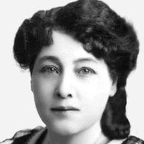

1873'te Paris yakınlarındaki Saint-Mandé'de doğan, 1968'de New Jersey'de ölen Alice Guy-Blaché, Gaumont'da sekreter olarak başladı ve 1896'dan itibaren kurmaca film yapımının başına geçerek yüzlerce kısa film yönetti. Sıklıkla anlatısal bir film yöneten ilk kadın olarak anılır ve senkronize ses ve renkle çalışan dünyadaki ilk sinemacılardan biriydi. 1907'de Amerika Birleşik Devletleri'ne taşındı ve New Jersey'nin Fort Lee kentinde kendi stüdyosu Solax'ı işletti. Katkısı büyük oranda unutuldu ve son on yıllarda film tarihçileri tarafından yeniden gün ışığına çıkarıldı.
Filmografi
- The Cabbage Fairy (1896)
- The Consequences of Feminism (1906)
- Falling Leaves (1912)
- Algie the Miner (1912)